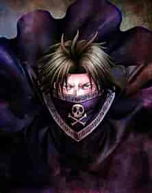
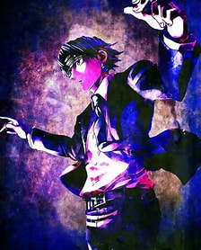
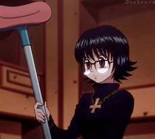
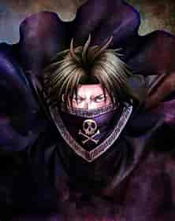
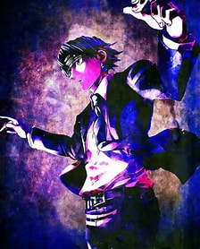
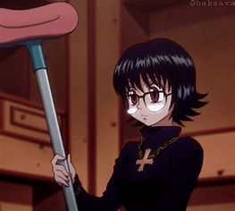

HUNTER X HUNTER
Hunter x Hunter was written and illustrated by Yoshihiro Togashi, the author of Yu Yu Hakusho
The words on Zeno Zoldyk’s clothing say either “A Kill A Day” (一日一殺) or “Never Retire” (生涯現役)
The Phantom Troupe has an arm wrestling rank among themselves to determine their physical strength.
The order from strongest to weakest of this arm wrestling is Uvogin, Phinks, Hisoka, Franklin, Feitan, Machi, Chrollo, Bonolenov, Nobunaga, Shalnark, Pakunoda, Shizuku, and Kortopi.
All four main protagonists share the same birthday characteristics – having the same number of birth month and day
And coincidentally, Hisoka too shares the same birthday characteristic. This is the reason why some fans consider him as the fifth protagonist.
Sui Ishida, the creator of Tokyo Ghoul, is a big fan of “Hunter X Hunter”.